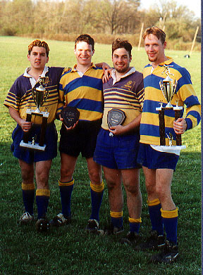

Spring 1998
| March 28 | Pittsburgh Invitational Tournament | |
| A side (lineups) U of Indiana Pa U of California Pa Oswego State |
10 - 17 10 - 7 8 - 18 |
|
| B side (lineups) Slippery Rock U of Indiana Pa |
5 - 41 0 - 31 |
|
| April 3 | U Conn at Troy, NY (lineups) | 12 - 24 |
| April 17 |
Beast of the East Tournament
|
50 - 0 55 - 0 3 - 17 |
| April 24 |
New York State College Tournament Windhover Park, NY (photos, lineups)
|
32 - 5 34 - 25 37 - 0 ? ? 5 - 0 |
| May 2 | Annual Alumni Game Team Awards 1997-98 |
|
 |
Canisius earns Open and B division championships at the "Upstates" |